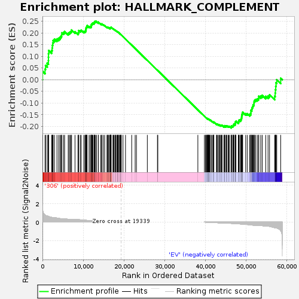
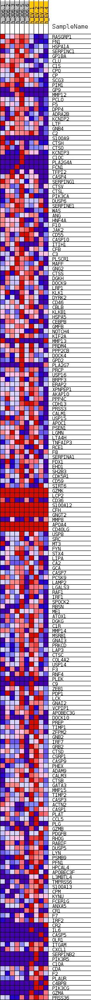
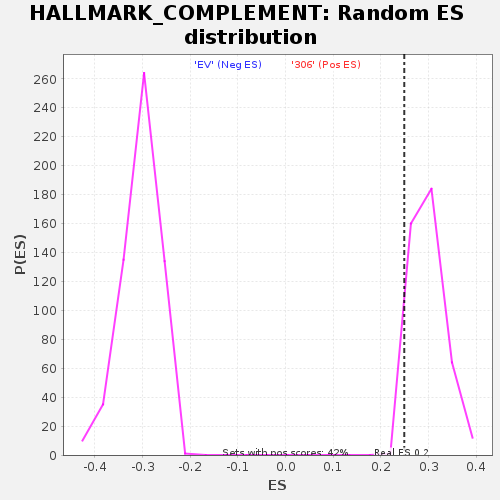

| | | Dataset | 306_EV_express.306_EV.cls#306_versus_EV |
| Phenotype | 306_EV.cls#306_versus_EV |
| Upregulated in class | 306 |
| GeneSet | HALLMARK_COMPLEMENT |
| Enrichment Score (ES) | 0.24888544 |
| Normalized Enrichment Score (NES) | 0.8319221 |
| Nominal p-value | 0.9928741 |
| FDR q-value | 1.0 |
| FWER p-Value | 1.0 |
Table: GSEA Results Summary

Fig 1: Enrichment plot: HALLMARK_COMPLEMENT
Profile of the Running ES Score & Positions of GeneSet Members on the Rank Ordered List
| SYMBOL | TITLE | RANK IN GENE LIST | RANK METRIC SCORE | RUNNING ES | CORE ENRICHMENT | | 1 | RASGRP1 | NNN | 20 | 1.462 | 0.0360 | Yes |
| 2 | FN1 | NNN | 634 | 0.775 | 0.0448 | Yes |
| 3 | HSPA1A | NNN | 760 | 0.731 | 0.0608 | Yes |
| 4 | SERPINC1 | NNN | 1162 | 0.661 | 0.0704 | Yes |
| 5 | GP1BA | NNN | 1454 | 0.616 | 0.0808 | Yes |
| 6 | CLU | NNN | 1469 | 0.615 | 0.0958 | Yes |
| 7 | C1S | NNN | 1484 | 0.613 | 0.1108 | Yes |
| 8 | CPQ | NNN | 1535 | 0.606 | 0.1250 | Yes |
| 9 | CP | NNN | 2272 | 0.507 | 0.1250 | Yes |
| 10 | SCG3 | NNN | 2388 | 0.494 | 0.1353 | Yes |
| 11 | PIM1 | NNN | 2420 | 0.489 | 0.1469 | Yes |
| 12 | GP9 | NNN | 2529 | 0.482 | 0.1571 | Yes |
| 13 | MMP12 | NNN | 2625 | 0.482 | 0.1674 | Yes |
| 14 | PCLO | NNN | 2953 | 0.470 | 0.1735 | Yes |
| 15 | F5 | NNN | 3559 | 0.442 | 0.1742 | Yes |
| 16 | DPP4 | NNN | 3977 | 0.407 | 0.1772 | Yes |
| 17 | ADRA2B | NNN | 4296 | 0.383 | 0.1813 | Yes |
| 18 | KCNIP2 | NNN | 4535 | 0.369 | 0.1864 | Yes |
| 19 | LTF | NNN | 4718 | 0.360 | 0.1922 | Yes |
| 20 | GNB4 | NNN | 4755 | 0.358 | 0.2005 | Yes |
| 21 | C2 | NNN | 5175 | 0.343 | 0.2019 | Yes |
| 22 | S100A9 | NNN | 5433 | 0.328 | 0.2056 | Yes |
| 23 | CTSH | NNN | 6316 | 0.313 | 0.1984 | Yes |
| 24 | CTSO | NNN | 6562 | 0.300 | 0.2016 | Yes |
| 25 | KCNIP3 | NNN | 6810 | 0.285 | 0.2045 | Yes |
| 26 | C1QC | NNN | 7047 | 0.274 | 0.2073 | Yes |
| 27 | PLA2G4A | NNN | 7149 | 0.274 | 0.2124 | Yes |
| 28 | FCN1 | NNN | 7984 | 0.274 | 0.2050 | Yes |
| 29 | TFPI2 | NNN | 8708 | 0.274 | 0.1994 | Yes |
| 30 | CASP4 | NNN | 8877 | 0.268 | 0.2032 | Yes |
| 31 | SERPING1 | NNN | 8878 | 0.268 | 0.2099 | Yes |
| 32 | CTSV | NNN | 9260 | 0.250 | 0.2096 | Yes |
| 33 | CTSL | NNN | 9495 | 0.241 | 0.2116 | Yes |
| 34 | PIK3CA | NNN | 10145 | 0.217 | 0.2059 | Yes |
| 35 | DUSP6 | NNN | 10429 | 0.206 | 0.2062 | Yes |
| 36 | SERPINE1 | NNN | 10581 | 0.200 | 0.2086 | Yes |
| 37 | WAS | NNN | 10610 | 0.199 | 0.2131 | Yes |
| 38 | ANG | NNN | 10686 | 0.196 | 0.2167 | Yes |
| 39 | HNF4A | NNN | 10703 | 0.196 | 0.2213 | Yes |
| 40 | F10 | NNN | 10795 | 0.193 | 0.2245 | Yes |
| 41 | JAK2 | NNN | 10927 | 0.190 | 0.2270 | Yes |
| 42 | CD55 | NNN | 10947 | 0.189 | 0.2314 | Yes |
| 43 | CASP10 | NNN | 11432 | 0.179 | 0.2276 | Yes |
| 44 | ITIH1 | NNN | 11717 | 0.168 | 0.2269 | Yes |
| 45 | CFB | NNN | 11931 | 0.163 | 0.2273 | Yes |
| 46 | C3 | NNN | 11959 | 0.161 | 0.2308 | Yes |
| 47 | PLSCR1 | NNN | 12010 | 0.159 | 0.2340 | Yes |
| 48 | MAFF | NNN | 12049 | 0.158 | 0.2372 | Yes |
| 49 | GNG2 | NNN | 12212 | 0.154 | 0.2383 | Yes |
| 50 | CTSS | NNN | 12274 | 0.152 | 0.2410 | Yes |
| 51 | DGKH | NNN | 12393 | 0.148 | 0.2427 | Yes |
| 52 | DOCK9 | NNN | 12669 | 0.142 | 0.2415 | Yes |
| 53 | LRP1 | NNN | 12692 | 0.142 | 0.2447 | Yes |
| 54 | KLK1 | NNN | 12834 | 0.138 | 0.2457 | Yes |
| 55 | DYRK2 | NNN | 12849 | 0.137 | 0.2489 | Yes |
| 56 | CD46 | NNN | 13044 | 0.132 | 0.2489 | No |
| 57 | CBLB | NNN | 13247 | 0.126 | 0.2485 | No |
| 58 | KLKB1 | NNN | 13686 | 0.115 | 0.2439 | No |
| 59 | HSPA5 | NNN | 13715 | 0.114 | 0.2463 | No |
| 60 | CEBPB | NNN | 14310 | 0.100 | 0.2387 | No |
| 61 | GMFB | NNN | 14532 | 0.095 | 0.2373 | No |
| 62 | NOTCH4 | NNN | 14587 | 0.094 | 0.2387 | No |
| 63 | KIF2A | NNN | 14943 | 0.086 | 0.2348 | No |
| 64 | MMP13 | NNN | 15261 | 0.082 | 0.2314 | No |
| 65 | PRDM4 | NNN | 15835 | 0.071 | 0.2234 | No |
| 66 | PPP2CB | NNN | 15917 | 0.069 | 0.2237 | No |
| 67 | DOCK4 | NNN | 15996 | 0.067 | 0.2241 | No |
| 68 | GPD2 | NNN | 16176 | 0.064 | 0.2226 | No |
| 69 | PLA2G7 | NNN | 16269 | 0.063 | 0.2226 | No |
| 70 | PRCP | NNN | 16558 | 0.061 | 0.2192 | No |
| 71 | USP16 | NNN | 16609 | 0.059 | 0.2198 | No |
| 72 | BRPF3 | NNN | 16618 | 0.059 | 0.2212 | No |
| 73 | ERAP2 | NNN | 16639 | 0.058 | 0.2223 | No |
| 74 | XPNPEP1 | NNN | 16735 | 0.057 | 0.2220 | No |
| 75 | AKAP10 | NNN | 16799 | 0.055 | 0.2223 | No |
| 76 | PPP4C | NNN | 16831 | 0.054 | 0.2232 | No |
| 77 | CDH13 | NNN | 16832 | 0.054 | 0.2245 | No |
| 78 | PRSS3 | NNN | 17294 | 0.044 | 0.2177 | No |
| 79 | CALM1 | NNN | 17406 | 0.042 | 0.2169 | No |
| 80 | USP15 | NNN | 17545 | 0.039 | 0.2155 | No |
| 81 | APOC1 | NNN | 17786 | 0.034 | 0.2123 | No |
| 82 | PSEN1 | NNN | 17902 | 0.033 | 0.2111 | No |
| 83 | LGMN | NNN | 17989 | 0.031 | 0.2104 | No |
| 84 | LTA4H | NNN | 18225 | 0.026 | 0.2071 | No |
| 85 | TNFAIP3 | NNN | 18358 | 0.023 | 0.2054 | No |
| 86 | RCE1 | NNN | 18419 | 0.022 | 0.2049 | No |
| 87 | F8 | NNN | 18542 | 0.019 | 0.2033 | No |
| 88 | SERPINA1 | NNN | 18612 | 0.018 | 0.2026 | No |
| 89 | FDX1 | NNN | 18798 | 0.014 | 0.1997 | No |
| 90 | EHD1 | NNN | 18949 | 0.011 | 0.1974 | No |
| 91 | SH2B3 | NNN | 19110 | 0.007 | 0.1949 | No |
| 92 | CDK5R1 | NNN | 19149 | 0.006 | 0.1944 | No |
| 93 | CD59 | NNN | 19277 | 0.002 | 0.1923 | No |
| 94 | SIRT6 | NNN | 19336 | 0.000 | 0.1913 | No |
| 95 | GZMK | NNN | 19760 | 0.000 | 0.1841 | No |
| 96 | LCP2 | NNN | 20377 | 0.000 | 0.1736 | No |
| 97 | CD36 | NNN | 21897 | 0.000 | 0.1477 | No |
| 98 | S100A12 | NNN | 22742 | 0.000 | 0.1333 | No |
| 99 | CFH | NNN | 23061 | 0.000 | 0.1279 | No |
| 100 | GNGT2 | NNN | 25731 | 0.000 | 0.0823 | No |
| 101 | MMP8 | NNN | 28210 | 0.000 | 0.0401 | No |
| 102 | APOA4 | NNN | 28306 | 0.000 | 0.0385 | No |
| 103 | CD40LG | NNN | 38130 | 0.000 | -0.1291 | No |
| 104 | USP8 | NNN | 39740 | -0.000 | -0.1565 | No |
| 105 | SRC | NNN | 39975 | -0.007 | -0.1603 | No |
| 106 | MT3 | NNN | 40048 | -0.009 | -0.1614 | No |
| 107 | FYN | NNN | 40245 | -0.013 | -0.1644 | No |
| 108 | STX4 | NNN | 40293 | -0.014 | -0.1648 | No |
| 109 | LIPA | NNN | 40397 | -0.017 | -0.1662 | No |
| 110 | CA2 | NNN | 40526 | -0.020 | -0.1679 | No |
| 111 | GCA | NNN | 40562 | -0.020 | -0.1679 | No |
| 112 | CASP7 | NNN | 40646 | -0.022 | -0.1688 | No |
| 113 | PCSK9 | NNN | 40647 | -0.022 | -0.1683 | No |
| 114 | LAMP2 | NNN | 40711 | -0.023 | -0.1687 | No |
| 115 | LGALS3 | NNN | 40826 | -0.026 | -0.1700 | No |
| 116 | RAF1 | NNN | 40881 | -0.027 | -0.1703 | No |
| 117 | IRF1 | NNN | 41048 | -0.031 | -0.1724 | No |
| 118 | SPOCK2 | NNN | 41100 | -0.031 | -0.1725 | No |
| 119 | RBSN | NNN | 41176 | -0.033 | -0.1729 | No |
| 120 | ME1 | NNN | 41496 | -0.039 | -0.1774 | No |
| 121 | ATOX1 | NNN | 41645 | -0.042 | -0.1789 | No |
| 122 | DGKG | NNN | 41871 | -0.047 | -0.1815 | No |
| 123 | C1R | NNN | 42007 | -0.050 | -0.1826 | No |
| 124 | MMP14 | NNN | 42012 | -0.050 | -0.1814 | No |
| 125 | MSRB1 | NNN | 42053 | -0.051 | -0.1808 | No |
| 126 | GNAI3 | NNN | 42695 | -0.065 | -0.1902 | No |
| 127 | PRKCD | NNN | 42765 | -0.066 | -0.1897 | No |
| 128 | LAP3 | NNN | 42855 | -0.068 | -0.1895 | No |
| 129 | CTSC | NNN | 43113 | -0.074 | -0.1921 | No |
| 130 | COL4A2 | NNN | 43336 | -0.079 | -0.1939 | No |
| 131 | USP14 | NNN | 43467 | -0.082 | -0.1941 | No |
| 132 | F3 | NNN | 43722 | -0.087 | -0.1962 | No |
| 133 | RNF4 | NNN | 43831 | -0.090 | -0.1958 | No |
| 134 | PLEK | NNN | 43974 | -0.092 | -0.1960 | No |
| 135 | C9 | NNN | 44072 | -0.092 | -0.1954 | No |
| 136 | ZEB1 | NNN | 44518 | -0.093 | -0.2006 | No |
| 137 | PDP1 | NNN | 44669 | -0.097 | -0.2008 | No |
| 138 | LCK | NNN | 44708 | -0.098 | -0.1990 | No |
| 139 | GNAI2 | NNN | 44724 | -0.098 | -0.1968 | No |
| 140 | VCPIP1 | NNN | 45061 | -0.106 | -0.1999 | No |
| 141 | APOBEC3G | NNN | 45074 | -0.106 | -0.1975 | No |
| 142 | DOCK10 | NNN | 45237 | -0.110 | -0.1975 | No |
| 143 | PREP | NNN | 45564 | -0.116 | -0.2002 | No |
| 144 | TIMP1 | NNN | 45690 | -0.119 | -0.1994 | No |
| 145 | ZFPM2 | NNN | 45919 | -0.124 | -0.2002 | No |
| 146 | GNB2 | NNN | 46307 | -0.135 | -0.2034 | No |
| 147 | IRF7 | NNN | 46377 | -0.137 | -0.2012 | No |
| 148 | GRB2 | NNN | 46389 | -0.137 | -0.1980 | No |
| 149 | CTSD | NNN | 46695 | -0.145 | -0.1996 | No |
| 150 | CSRP1 | NNN | 46789 | -0.147 | -0.1975 | No |
| 151 | CASP9 | NNN | 46828 | -0.148 | -0.1945 | No |
| 152 | PHEX | NNN | 46927 | -0.151 | -0.1924 | No |
| 153 | ADAM9 | NNN | 46973 | -0.152 | -0.1894 | No |
| 154 | CALM3 | NNN | 47282 | -0.160 | -0.1907 | No |
| 155 | CTSB | NNN | 47324 | -0.161 | -0.1874 | No |
| 156 | GATA3 | NNN | 47343 | -0.162 | -0.1837 | No |
| 157 | MMP15 | NNN | 47355 | -0.162 | -0.1798 | No |
| 158 | TIMP2 | NNN | 47475 | -0.166 | -0.1777 | No |
| 159 | CASP3 | NNN | 48050 | -0.183 | -0.1830 | No |
| 160 | ACTN2 | NNN | 48157 | -0.187 | -0.1801 | No |
| 161 | CASP1 | NNN | 48161 | -0.187 | -0.1755 | No |
| 162 | PLAT | NNN | 48281 | -0.191 | -0.1728 | No |
| 163 | CCL5 | NNN | 48593 | -0.204 | -0.1731 | No |
| 164 | PLG | NNN | 48679 | -0.207 | -0.1694 | No |
| 165 | GZMB | NNN | 48813 | -0.211 | -0.1664 | No |
| 166 | PDGFB | NNN | 48871 | -0.214 | -0.1621 | No |
| 167 | RHOG | NNN | 48885 | -0.215 | -0.1569 | No |
| 168 | RABIF | NNN | 48913 | -0.216 | -0.1520 | No |
| 169 | DUSP5 | NNN | 48976 | -0.219 | -0.1477 | No |
| 170 | LYN | NNN | 49084 | -0.223 | -0.1439 | No |
| 171 | PSMB9 | NNN | 49118 | -0.224 | -0.1389 | No |
| 172 | PFN1 | NNN | 49861 | -0.244 | -0.1455 | No |
| 173 | HPCAL4 | NNN | 50241 | -0.261 | -0.1455 | No |
| 174 | APOBEC3F | NNN | 50820 | -0.289 | -0.1482 | No |
| 175 | L3MBTL4 | NNN | 51072 | -0.301 | -0.1450 | No |
| 176 | TMPRSS6 | NNN | 51144 | -0.304 | -0.1386 | No |
| 177 | S100A13 | NNN | 51145 | -0.304 | -0.1311 | No |
| 178 | CPM | NNN | 51359 | -0.313 | -0.1269 | No |
| 179 | KYNU | NNN | 51404 | -0.316 | -0.1198 | No |
| 180 | FCER1G | NNN | 51569 | -0.326 | -0.1145 | No |
| 181 | ANXA5 | NNN | 51673 | -0.332 | -0.1081 | No |
| 182 | CR1 | NNN | 51889 | -0.338 | -0.1033 | No |
| 183 | F7 | NNN | 51905 | -0.339 | -0.0952 | No |
| 184 | IRF2 | NNN | 52026 | -0.345 | -0.0886 | No |
| 185 | CR2 | NNN | 52307 | -0.357 | -0.0845 | No |
| 186 | IL6 | NNN | 52697 | -0.357 | -0.0823 | No |
| 187 | CASP5 | NNN | 53005 | -0.357 | -0.0786 | No |
| 188 | OLR1 | NNN | 53074 | -0.357 | -0.0709 | No |
| 189 | ITGAM | NNN | 53564 | -0.361 | -0.0703 | No |
| 190 | CXCL1 | NNN | 53919 | -0.386 | -0.0668 | No |
| 191 | SERPINB2 | NNN | 54785 | -0.417 | -0.0712 | No |
| 192 | PIK3R5 | NNN | 55348 | -0.441 | -0.0698 | No |
| 193 | C1QA | NNN | 55717 | -0.463 | -0.0646 | No |
| 194 | CDA | NNN | 56968 | -0.613 | -0.0706 | No |
| 195 | F2 | NNN | 57107 | -0.624 | -0.0575 | No |
| 196 | PLAUR | NNN | 57157 | -0.634 | -0.0426 | No |
| 197 | C4BPB | NNN | 57241 | -0.643 | -0.0280 | No |
| 198 | PIK3CG | NNN | 57303 | -0.643 | -0.0131 | No |
| 199 | GZMA | NNN | 57482 | -0.648 | -0.0000 | No |
| 200 | PRSS36 | NNN | 58452 | -0.925 | 0.0064 | No |
Table: GSEA details [plain text format]

Fig 2: HALLMARK_COMPLEMENT
Blue-Pink O' Gram in the Space of the Analyzed GeneSet

Fig 3: HALLMARK_COMPLEMENT: Random ES distribution
Gene set null distribution of ES for HALLMARK_COMPLEMENT